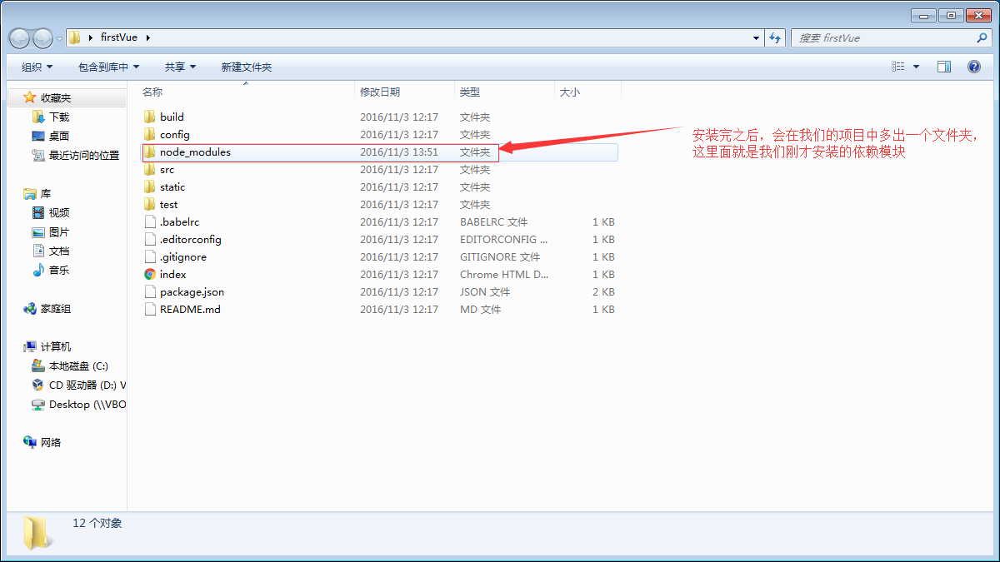

先想想一个项目，vue项目是从什么到什么，然后再什么的？那是什么呢？
首先node.js，npm，vue-cli（脚手架）一定要有，这里不细讲。装就完事了。
进想放的文件夹，vue init webpack XXXVue(项目名称，随你取)，配置：
Project name (my-vue)？————————-项目名称(My-Vue)？
Project description (A Vue.js project)————————-项目说明(Vue.js项目)？
Author？————————-作者？
Install vue-router? (Y/n)————————-安装vue路由
Use ESLint to lint your code? (Y/n)(启动校验？？就是查查你的代码错误，不开也行，开也行。)
？Set up unit tests (Y/n) 敲n回车既可 ( 单元测试， 个人觉得不安装选择n )
？Setup e2e tests with Nighwatch？(Y/n) ( e2e测试，个人觉得不安装选择n )
？Should we run npm install for you after the project has been created？ (recommended) (use arrow Keys) 选使用npm
在项目夹的命令行：npm install（安装依赖，以后就可以为所欲为的npm i xxx了）
XXXXVue文件夹中多出一个node_modules文件夹。

目录：↑
先运行命令： npm run dev
加载，搞定！
dist是经过npm run build打包过后的文件，文件非常小。dist正常无法直接打开需要通过服务器，云服务器也行，本地用phpstudy啥的也行。
也可以去封装做成一个H5 app。使用云打包即可。